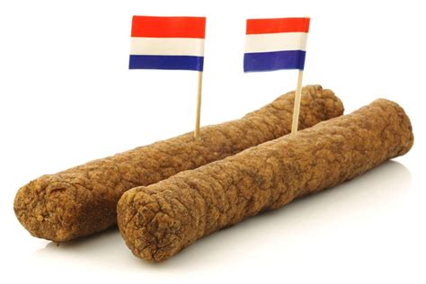

Frikadel Recipe

Description
For this recipe, you need a bike and you need to be quick. Nobody wants a
cold frikadel on his (or her) plate! This delicious piece of processed meat
and other mystery ingredients needs to burn your tongue to the third degree!
Ingredients
- Meat
- Plasma
- To taste: ketchup (tomatoe or curry), chopped onion, mayonnaise
Steps
- Grab the keys to your house
- Get out and close the door behind you. You don't want to get robbed!
- Hop on your bike and drive to the frituur on the bridge
- Get in line and order a frikadel. If you're celebrating an important date, make it a frikadel speciaal.
- Wait for 5 minutes. In the meantime, get up to speed with the latest intrigues of episode 2109 of Flemish soap series Familie.
- Take the plastic bag, go home! Drive quickly, because hot is the message!
Go home.